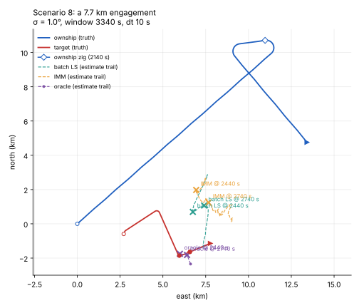
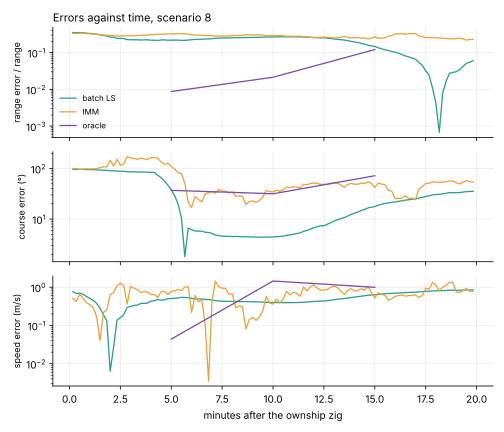
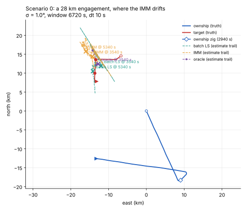

Reporting progress
Two posts per task: a kickoff before, slides after
8 November 2026 · process · gitma2
Overview: what changes in the workflow
specify→kickoff post→
plan · tasks→implement→
slides post→PR
- A task is a Spec Kit feature or a gate run; smaller changes add a dated paragraph.
- Kickoff: where we are, where this task moves to, how progress will be shown.
- Slides: illustrated overview, demonstration with charts and track plots, not achieved, next.
- Bound in constitution 1.3.0; practice in AGENTS.md and the process page.
Overview: how a figure is made
tma2-plot track reads a truth split and any prediction files.- Ownship blue, target red, each estimator's trail from the zig, marks and 1-σ ellipses at named times.
- A
.json sidecar per figure: data digests, scenario, command, commit.
- Pre-zig rows hidden; implausible rows masked.

Where our TMA thought the target was (7.7 km)
Demo split, seed 316, MAN2 ranges, scenario 8. Marks 5 and 10 min after the zig. The single-model estimators sit 2–3 km north of the target after its early turn; the oracle, given the manoeuvre times, sits on it.
Errors against time, scenario 8

Log scale. Batch LS and the IMM stay near 30% range error; the oracle falls below 1%.
A far engagement (28 km), where the IMM drifts

Over the hour after the zig the IMM's range error grows from 10% to 30%; batch LS settles near 1%. On quiet legs the manoeuvre model costs.
Not achieved
- Static figures only: no animation of the estimate through time.
- No metric chart from a committed scoring run yet.
- SVGs are 70–85 KB each; long decks will want them optimised.
Next
- Owner merges constitution 1.3.0; the practice is adopted on the agent side meanwhile.
- Spec 008 gets its kickoff post when next touched; Gate 3's slides post is the first for a gate.
Post: /blog/2026/11/08/reporting-slides · Figures: tma2-plot, sidecars next to each SVG